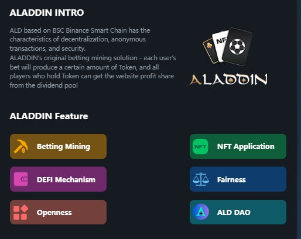
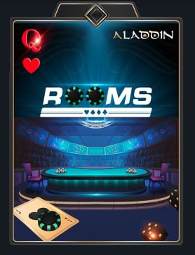
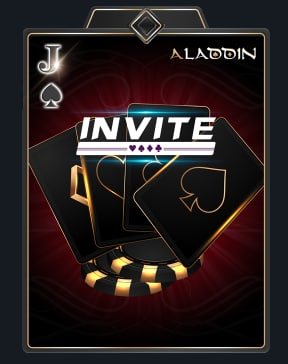
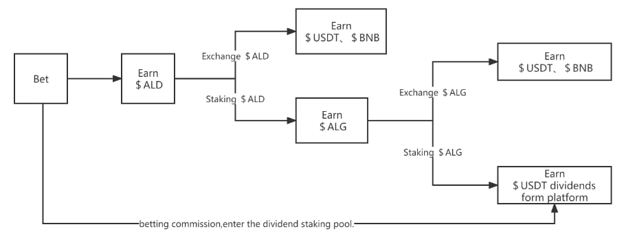

.Smart Chain منصة ويب 3.0 لامركزية قائمة على شبكة بينانس سمارت تشين ALADIN BET مشروع
تعد هذه المنصة أول منصة ألعاب في العالم تدعم كل من التكنولوجيا اللامركزية و اللعب اللامركزي
.(USDT-BUSD) حيث يمكن للاعبين اللعب و الرهان على ألعاب و رياضات مختلفة باستخدام العديد من العملات الرقمية كما يمكن أيضاً استخدام العملات الرقمية الثابتة القيمة BetToEarn شعارها الأساسي هو
.ALD اللعب و التعدين : في أي لعبة رهان يكون للمراهنة أهمية قصوى حيث عندما يراهن اللاعبون و وفقًا لمبلغ الرهان الخاص بهم سيتم مكافئتهم بعملة
من خلال امتلاك كروت خاصة حيث NFt قابلية استخدام كروت
.المتحكم بقبول و رفض الرهانات و تحديد الحدود الدنيا و العليا لقيمة الرهان كما سيكون بإمكانه إنشاء غرفة الرهان الخاصة به و دعوة مستخدمين آخرين للمراهنة على ما يختاره Banker يمكن للمستخدم أن يكون المصرفي
.USDT للحصول على ALG الخاصة بالمنصة كما يمكن قفل و تخزين عملة ALG للحصول على عملة الحوكمة ALD بهدف التعدين مثلا يمكن تخزين و قفل عملة ALD-ALG لعملات المنصة Farming و الفارم Staking حيث سيكون المستخدمين قادرين على القيام بعمليات الستيك : DEFI القيام بكل ما يدخل ضمن
.و المشاركة من خلالها بعملية صنع القرار vALG للحصول على نقاط التصويت ALG يقوم المستخدمين بتخزين عملة الحوكمة .DAO الخاص بالمنصة : حيث يركز الفريق المطور على إدخال و مشاركة المستخدمين بعملية صنع القرار و تقرير مستقبل المنصة من خلال نظام التصويت DAO التصويت
.أيضا سيتمكن المستخدمين من وضع الرهانات على رياضة كرة القدم لمختلف الدوريات العالمية الكبرى و العادية بالإضافة إلى حدث كأس العالم عند انطلاقه Baccarat و باكارات Blackjack بلاك جاك Texas Poker حاليا بعد الانطلاق الرسمي للمشروع سيتوفر ثلاثة ألعاب رئيسية يمكن للمستخدمين الاستمتاع بها و الربح منها هي تكساس بوكر
.و سيتم توليد العملة بعد الفوز مباشرةً ALD أرباح كافة الألعاب السابقة و الرهانات ستكون من خلال عملة
. بحيث يمكن الحصول عليها من خلال المشاركة بالإحداث و الفعاليات التي ستقوم بها المنصة, الأيردروبات و من خلال الشراء المباشر من الماركت ما عدا النوع الرابع الذي سيتم الحصول عليه من خلال برنامج تدريب خاص و سيكون عدده محدود جداً NFT يوفر المشروع للمستخدمين 4 أنواع مختلفة من كروت ال
.يعطيك صلاحيات المصرفي و الممول لغرفة الرهان بحيث تكون قادر على قبول و رفض المشاركين. عدد القطع التي سيتم عرضها من هذا الكرت غير محدد
.jpg)
.يعطيك صلاحية إنشاء غرفة خاصة للعب مع الأصدقاء أو غرفة للرهان كما يسمح بتحديد العملة المستخدمة بالرهان و كذلك تحديد قيمة الرهان. مالك هذا الكرت يحصل على بونص إضافي 90% من قيمة أرباح المشاركين بالغرفة. عدد القطع التي سيتم عرضها من هذا الكرت غير محدد
.يعطيك صلاحية دعوة أصدقائك إلى غرفة اللعب أو المراهنة التي قمت بإنشائها كما أن مالك هذا الكرت يحصل على بونص إضافي يعادل 50-80% من الأرباح التي يحصل عليها الأشخاص الذين قام بدعوتهم. و عدد القطع التي سيتم عرضها للبيع من هذا الكرت هو 3000 قطعة فقط
.يعطي هذا الكرت لمالكه كافة الصلاحيات التي تعطيها الكروت الثلاثة السابقة بالتالي فإن امتلاكه يعادل امتلاك الكروت الثلاثة مجتمعة
قائمتين على شبكة بينانس سمارت تشين (ALD-ALG) يدعم المشروع عملتين
. وفق المخطط التالي USDT للحصول على ALG ثم تخزين ALG للحصول على ALD يمكن للمستخدمين تخزين
ALG من المنصة أو تخزينها للحصول على عملة الحوكمة NFT عدد القطع غير محدود و هي تعتبر عملة الربح من المنصة أي أن المستخدمين سيكافئون بهذه العملة عند الفوز و الرهان و يمكن استخدامها لشراء ال
عندما يصل عدد القطع لدى المستخدمين إلى 1 مليار سيطبق الفريق آلية خاصة لحرق عدد كبير من القطع للحفاظ على قيمة العملة و سيكون للمستخدمين المشتركين بالتصويت
DAO دور كبير في تقرير كمية و نسبة الحرق
. مدى الحياة USDT بعد انطلاق المشروع وامتلاك هذه العملة يؤمن للمستخدمين حق التصويت و ربح عملة ALD و هي عملة الحوكمة الخاصة بالمنصة و لها الدور الأكبر في الحفاظ على اللامركزية و ضمان حق المستخدمين في المشاركة بعملية صنع القرار و تقرير مستقبل المنصة و تطويرها و ستتميز هذه العملة بعدم وجود آلية للشراء المسبق حيث ستكون الطريقة الوحيدة للحصول عليها هو قفل و تخزين عملة
: يمكن الإطلاع عليها بالتفصيل من خلال الرابط التالي
الورقة البيضاءالانطلاق الرسمي للمشروع
DAO بدء العمل بنظام التصويت
إطلاق حدث كأس العالم
إدراج عملات المشروع على منصة لامركزية و الحصول على موافقة مبدئية مع منصة مركزية
إطلاق برنامج لدعم المستخدمين الأوفياء
إطلاق نظام لتصنيف اللاعبين ضمن لعبة البوكر
الإدراج على منصة مركزية مهمة
WPT-APT عقود رعاية مع دوريات عالمية مثل
إجراء العديد من الشراكات الاستراتيجيه
إطلاق حدث كأس العالم بلعبة البوكر
crown-365 تقديم عملة المنصة في مواقع المراهنات العالمية مثل
3D إطلاق كازينو ضمن العالم الافتراضي بتقنية
.ملاحظة : ترتيب و تسلسل هذه الأحداث ضمن خريطة الطريق خاضع للتغير تبعاً للظروف و الأحداث الاقتصادية العالمية و متغيرات السوق لكن الفريق ملتزم بإتمام كل ما هو وارد في خارطة الطريق
الموقع الخاص بالاختبار العام WEB-STAT
WEB-STAT